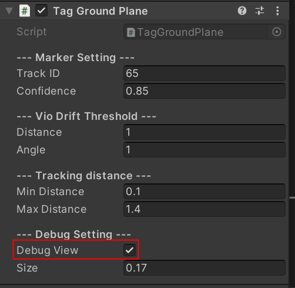

Ground Plane
描述
Ground Plane对应SDK中的Tag Ground Plane组件
他的主要作用是，通过物理实体定位信标对整个虚拟场景的地面进行定位，类似于VR里面进入场景后设置使用区域的功能。
通常我们将定位信标放置在地面使用，所以我们默认将其Transform均设置为0
如果我们需要将定位信标放置在墙上，或者桌子上，我们可以根据使用场景，来设置其Tramsform值以满足使用需求。
具体属性的意义见下表：
属性 |
描述 |
|---|---|
Track ID |
用于设置定位信标的ID值 |
Confidence |
表示跟踪数据的可信度，数值为0-1，可信的度越大，数值越稳定，但是跟踪范围也会缩小，建议使用推荐值 |
VIO Drift Threshold Distance |
定位位置偏移超过此数值时，重新识别GroundPlane自动校准 |
VIO Drift Threshold Angle |
定位角度偏移超过此数值时，重新识别GroundPlane自动校准 |
Min Distance |
设置定位信标最小跟踪距离 |
Max Distance |
设置定位信标最大跟踪距离 |
Debug View |
是否开启Debug模式，开启后定位信标被跟踪到时会渲染出一个坐标轴 |
Size |
设置Debug View渲染出来的坐标轴的尺寸 |
Note
通常可识别最大/最小距离需要根据实际使用定位信标的可识别范围来设置，
Beacon的最大距离通常设置为1.8m，
大Marker最大距离通常设置为2m
主动发光灯（侧灯，地灯）最大距离通常设置为5m
使用方法
确认需要用作Ground Plane的Tag的ID编号，通常使用标配的1号Beacon，即ID为65.
Note
如果使用的是非标配Beacon，请先确认其ID编号再进行使用
在Hierarchy界面点击鼠标右键选择Ximmerse XR->Ground Plane
根据实际使用的定位信标类型，设置最大识别距离即可
Note
GroundPlane只需要放置在Scene里面的任何地方即可实现定位场景地面的功能，不需要将所有模型创建为Ground Plane的子对象。
如果不确定是否识别到Ground Plane对应的定位信标，可以勾选Debug View进行观察